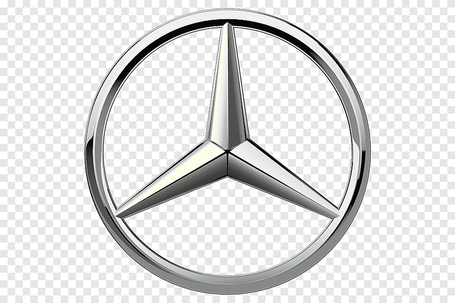
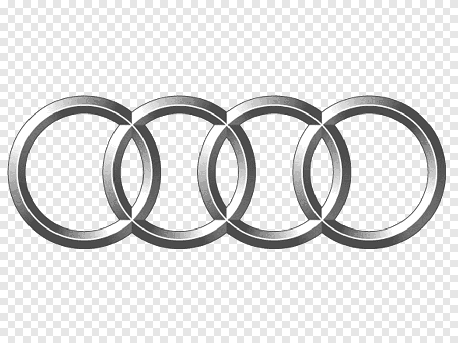

TODO SOBRE RÄDER
Vehículos Alemanes
Alemania es sinónimo de ingeniería de precisión. Marcas como BMW, Mercedes-Benz, Audi y Porsche han establecido los estándares del lujo, la seguridad y la tecnología en el sector automotriz. Sus vehículos combinan potencia y elegancia como pocos en el mundo.
Marcas, Eslóganes y Símbolos
| Marca | Eslogan | Símbolo |
|---|---|---|
| BMW | El placer de conducir |  |
| Mercedes-Benz | Lo mejor o nada |  |
| Audi | A la vanguardia de la técnica |  |